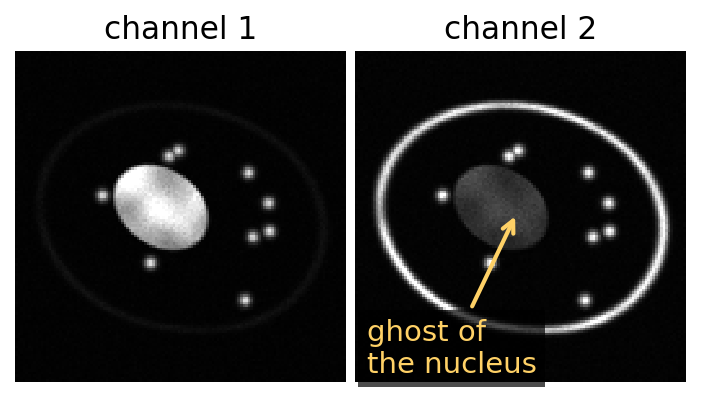
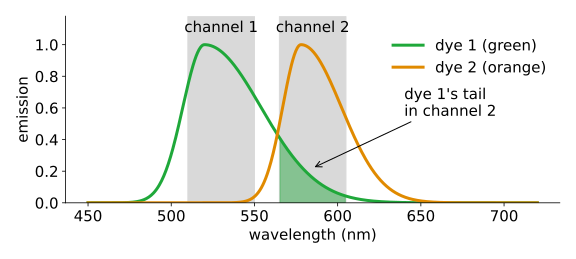
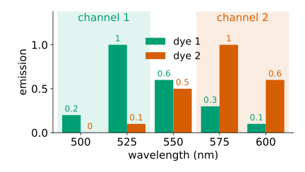
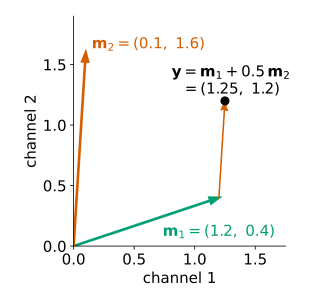
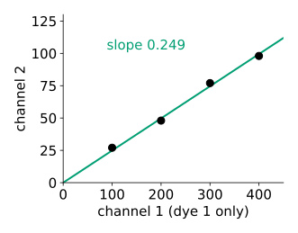
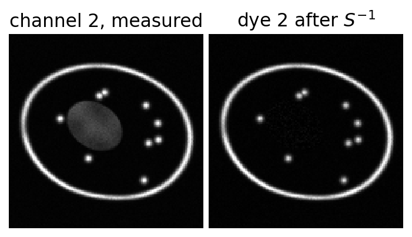
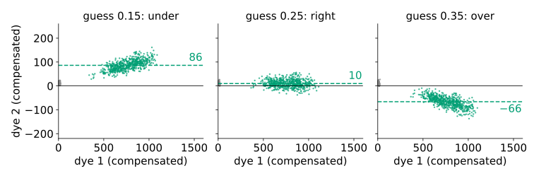

A two-colour fluorescence image: nucleus labelled green, membrane labelled orange. The orange channel shows a faint ghost of the nucleus. Nothing orange is in the nucleus: the green dye’s light leaks into the orange channel.

Why dyes bleed through: broad emission spectra seen through finite filter bands.
Each dye gives one column of a mixing matrix: a pixel is \mathbf y = M\mathbf a.
A single-stained control measures a column.
Compensation undoes the mixing with M^{-1}; under- and over-compensation, and why similar dyes are hard.
Slides titled The math give the formulas and proofs; the ideas are complete without them.
Why a dye shows up in the wrong channel

A dye emits over a broad range of wavelengths, with a long tail towards the red.
A channel’s filter lets through one band. Channel 1 is meant for dye 1, channel 2 for dye 2.
Dye 1’s tail reaches into channel 2’s band: a pixel with only dye 1 still gives a signal in channel 2. That is bleed-through (or crosstalk, spillover).
A second source: one laser can excite both dyes. The algebra below is the same.
A channel adds up a band
The value a channel records is the dye’s spectrum times the filter’s transmission, added up over wavelength.

Five bins of 25 nm, one unit of each dye. Channel 1 passes the 500 and 525 nm bins (filter 1, else 0), channel 2 the 575 and 600 nm bins.
One column per dye: \mathbf m_k = (M_{1k}, \dots, M_{Nk})^\top, the dye as the channels see it.
A linear map from a spectrum to N numbers, the same as the camera of the colour day (three numbers from a spectrum).
Narrower f_c: smaller off-diagonal M_{ck}, but also a smaller M_{kk}: fewer photons for the dye’s own channel.
Try it: spectra and filters
Fluorescence adds: the mixing matrix
Light from different dyes adds in each channel. A pixel with amounts a_1 of dye 1 and a_2 of dye 2 records
\mathbf y = a_1 \mathbf m_1 + a_2 \mathbf m_2 = M \mathbf a, \qquad M = \begin{pmatrix} \mathbf m_1 & \mathbf m_2 \end{pmatrix}.
Rows of M = channels, columns = dyes (components). Column k is where one unit of dye k lands: “the columns of a matrix are where the axes land” (the images unit, day 1).
Scale each column by its own channel: the spillover matrixS = \begin{pmatrix} 1 & s_{12} \\ s_{21} & 1 \end{pmatrix}. From the five-bin example: s_{21} = 0.4/1.2 = 0.33, s_{12} = 0.1/1.6 = 0.06.
The whole image: Y = MA, channels × pixels = (channels × dyes)(dyes × pixels). One matrix for all pixels.

Brightfield stains multiply
Absorbing stains (H&E, DAB) do not add light, they remove a fraction of it: two stains on top of each other multiply the transmitted light.
Take the logarithm first, the optical density-\log_{10}(I/I_0): then the stains add, and the same model \mathbf y = M\mathbf a holds.
The unit on stain separation (colour deconvolution) does exactly that; today stays with fluorescence.
A single-stained control measures a column
Image a sample with only dye 1. Every pixel is a_1 \mathbf m_1: in the scatter plot of channel 2 against channel 1 the pixels lie on a line through the origin with slope s_{21}.
Four background-subtracted control pixels: (100, 27), (200, 48), (300, 77), (400, 98). The slope through the origin: \sum xy / \sum x^2 = 74\,600 / 300\,000 = 0.249.
Subtract the offset (dark level, background) first: an offset is a fake component with a flat spectrum and tilts the estimate.
A dim control gives a poor estimate: controls should be at least as bright as the sample.
One control per dye; with K dyes, K controls give the K columns.

The math: the slope through the origin
The control pixels satisfy y_i \approx s\, x_i. Least squares: minimise E(s) = \sum_i (y_i - s x_i)^2.
\frac{dE}{ds} = -2 \sum_i x_i (y_i - s x_i) = 0 \quad\Longrightarrow\quad \hat s = \frac{\sum_i x_i y_i}{\sum_i x_i^2}.
No intercept: zero dye gives zero signal (after offset subtraction).
Noise in x (the dye’s own channel) biases a regression slope towards 0; bright controls keep that bias small.
Compensation: undo the matrix
If \mathbf y = S\mathbf a, then \mathbf a = S^{-1}\mathbf y. With s_{21} = 0.25, s_{12} = 0.02:
The inverse has negative off-diagonal entries: “subtract 25 % of channel 1 from channel 2”, and a little the other way.
Compensation is one 2 \times 2 matrix applied to every pixel: the ghost of the nucleus disappears from channel 2.
It does not remove noise: the compensated values carry the noise of both channels, mixed through S^{-1}.

Synthetic cell of the demo below (true spillover 0.25 and 0.05).
The math: the 2 \times 2 inverse
\begin{pmatrix} a & b \\ c & d \end{pmatrix}^{-1} = \frac{1}{ad - bc}\begin{pmatrix} d & -b \\ -c & a \end{pmatrix}.
For S: \det S = 1 - s_{12}s_{21} = 1 - 0.02 \cdot 0.25 = 0.995, so S^{-1} = \frac{1}{0.995}\begin{pmatrix} 1 & -0.02 \\ -0.25 & 1 \end{pmatrix}.
\det S is the area of the parallelogram spanned by the two columns. Well-separated dyes: a near-square, \det \approx 1, S^{-1} \approx I minus small corrections.
Similar dyes: nearly parallel columns, a thin parallelogram, \det \to 0 and entries of S^{-1} of size 1/\det.
Try it: compensate the image
Under, over, and the check without ground truth
Under-compensated (guess too small): the single-stained population still tilts up; its median sits above the background.
Over-compensated (guess too large): it tilts down, below the background, into negative values.
A dye cannot emit negative light. Pixels of a single-stained population clearly below the background mean the spillover was set too high. A population that rises or falls with its own dye means the spillover is wrong.

In the demo (true s_{21} = 0.25; dashed: the median): guess 0.15 leaves a median of 86 in channel 2 (background 11), guess 0.35 gives -66.
The math: what a wrong guess leaves
A pixel with only dye 1: \mathbf y = a\,(1,\ s)^\top (take s_{12} = 0). Compensating with the guess g:
\hat a_2 = y_2 - g\, y_1 = (s - g)\, a .
The dye-1 population lies on a line with slope exactlys - g: up when g < s, flat when g = s, down when g > s.
With both off-diagonals guessed (g_{12}, g_{21}): \hat{\mathbf a} = S_g^{-1} S \mathbf a; to first order in the errors the slope is still s_{21} - g_{21}.
Similar dyes: compensation amplifies noise
Two dyes with nearly the same spectrum: S_2 = \begin{pmatrix} 1 & 0.9 \\ 0.9 & 1 \end{pmatrix}, \det S_2 = 0.19,
A 10-unit error in channel 2 becomes errors of 47 and 53 in the two dyes. With S of the previous slides it stays 10.
The average is still right; individual pixels are not. In the demo the background noise grows from 4.6 to 31 after compensation.
Choosing dyes and filters that are far apart matters more than any algorithm. The next unit measures this with the condition number.
Bleed-through fakes colocalisation
Nucleus and membrane are different places, yet in the measured image the two channels correlate: every bright nucleus pixel is also a bit bright in channel 2.
In the demo: Pearson’s r between the channels inside the cell is 0.33 before compensation and −0.03 after.
Any measurement that compares channels (colocalisation, ratios, FRET) must compensate first. Colocalisation itself is taught in the colocalisation elective; FRET in the FRET elective.
Physical remedies: narrower filters (cost: photons), sequential excitation (one laser at a time), dyes further apart.
A flow cytometer measures thousands of cells per second, each a “pixel” with one value per detector.
Same spillover, same S^{-1}, one compensation per cell. This is where “compensation” got its name.
Spectral cytometers unmix 20 or more dyes with many detectors: the least squares of the next unit.
Summary
Broad emission spectra and finite filter bands: each dye shows up in several channels (bleed-through).
A channel value is spectrum × filter, added over wavelength; one dye gives one column of M; fluorescence adds: \mathbf y = M\mathbf a.
A single-stained control measures a column: the slope through the origin, after offset subtraction.
Compensation: \hat{\mathbf a} = M^{-1}\mathbf y. A single-stained population should lie flat at the background level; tilted up = under, tilted down and negative = over.
Similar dyes: \det M \to 0, the inverse is large and amplifies noise.
Bleed-through makes independent channels correlate: compensate before comparing channels.